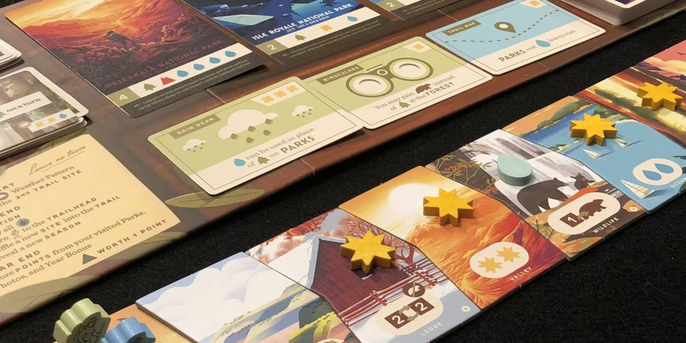
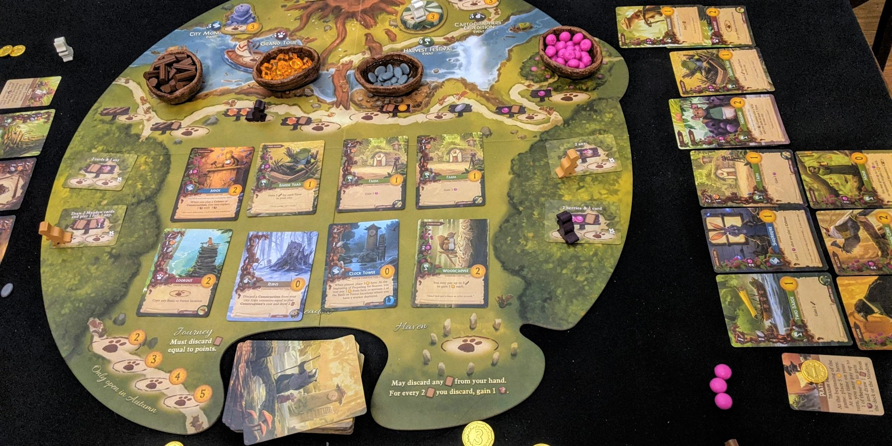

If you like Wingspan, try these 3 games


Wingspan has beautifully illustrated artwork, great production quality, and its gameplay is smart. Wingspan's theme and game mechanics also complement each other very well, which always makes for a great experience. Once you've played this game, it's easy to understand why it has become incredibly popular and has sold over 1 million copies!
Wingspan has complex strategy behind its approachable theme, and it's definitely more challenging than your average board game. If you already love Wingspan, then you're ready for these games.
Parks

If you want another game with beautiful illustrations and challenging gameplay, look no further than Parks. As a player, you trek the National Parks of the U.S., taking photographs, purchasing gear, and trying to outwit other hikers along the way.
The game is played on a path of location tiles that are placed in a random order each round - some provide resources, while others let you take special actions. On your turn, you may move one of your two hikers to any unoccupied tile down the trail. You will leapfrog the other hikers until you reach the end, at which point you can visit a park by paying its resource cost. Parks are valuable, so you'll want to visit as many as possible!
There are some mind-games in how quickly you should advance along the path, and you'll frequently have to choose whether to take more resources or stay ahea. Special gear, bonus cards, and your fellow campers' actions will also influence your own strategy.
There are some mind-games in how quickly you should advance along the path, and you'll frequently have to choose whether to take more resources or stay ahead. Special gear, bonus cards, and your fellow campers' actions will also influence your own strategy.
Buy Parks on Amazon
Everdell
Everdell is a card game with a woodland creature theme that sports incredible artwork. You'll be adding Critter and Construction cards to your village, and these each have a unique effect. Some cards also chain into others, so you can pull off satisfying combos just like in Wingspan!
You start each game with nothing but the cards in your hand. Cards require various resources to play, so you'll need to send workers to the board to collect berries, resin, stone, and wood. Each space can hold only one worker, so the board quickly fills up! This aspect of worker placement adds some great player interaction, and you'll need to carefully plan ahead to play all the cards you want.
There are many viable strategies in Everdell. You can build Farms and Chip Sweeps to have good harvests, construct buildings with a Crane or two, or even give berries and cards to your opponents to gain rewards! There are many ways to score points, and you'll just have to figure out what works best each game.
Everdell is a joy to play for the artwork and fun card combos, and you'll want to play again and again to try out new strategies. Everdell is also a step up in difficulty from Wingspan, so this is a great option if you're looking to get into slightly heavier games.
Buy Everdell on Amazon
Terraforming Mars

Terraforming Mars is an engine-building card game like Wingspan, but in this game, you and your opponents work to make Mars into a habitable planet. If you're ready for a bigger challenge, this is an excellent game to play next (and it's one of our all-time favorites).
Every card in Terraforming Mars provides a unique effect - these can be placing forests on the board, establishing a city on a moon, or even raising livestock. Some cards increase your resource production levels, which help you afford more expensive cards later on. You'll also be able to claim valuable Milestones, fund Awards, and most importantly, terraform Mars!
The game ends when the temperature, oxygen level, and ocean coverage reach a livable threshold. A cool twist in Terraforming Mars is that all players raise these levels together, despite the game being competitive The number of rounds in a game varies depending on how fast your group terraforms Mars, so you'll have to adjust your strategy accordingly.
Despite its strategic depth, Terraforming Mars is relatively straightforward to learn. The rulebook is concise, each card explains what it does, and a beginner mode lets players ease into the experience. Terraforming Mars is harder to be good at right away compared to Wingspan, but its higher strategy ceiling leads to very rewarding sessions!
Buy Terraforming Mars on Amazon
Honorable Mentions
If you're looking for a lighter game to play, these games are less complex than Wingspan and the other games on this list.
Bunny Kingdom is another card game with a fun animal theme, this time centered around bunnies vying for medieval territories. Instead of having a hand, you'll draft many cards over four rounds. You take two cards on your turn, and each card either lets you place a bunny on the board OR score points based on which areas your bunnies control. The trick is to have a strong board presence while still earning enough points to win! This game is quite different from Wingspan, but it will add some great variety to your collection.
Buy Bunny Kingdom on AmazonGizmos is another fun engine-builder that takes the bird-power-chaining mechanic from Wingspan and focuses on it 100%. Every machine you construct will play off of another machine or action in Gizmos. It's so satisfying to trigger the powers of 4 or 5 birds at once, and Gizmos gives you that feeling every turn. This game is lighter than Wingspan, and could be a great option if you're looking for something shorter. Also, as a bonus, the 2nd edition of this game also added a cool marble tower for picking energy spheres from!
Buy Gizmos on AmazonWant more recommendations or have feedback for us? Send an email to support@spiralburst.com and we'll get back to you!